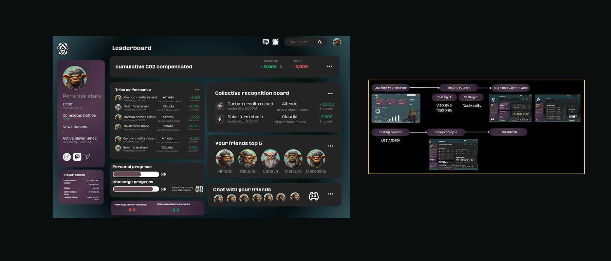

Trollverse needed a dashboard that made complex engagement data understandable to players while encouraging continued participation in sustainability challenges. The data included carbon credits, tribe performance, personal progress, and social features, all of which needed to coexist without overwhelming users.
We applied the Design Thinking methodology, drawing on training from our Creative Business studies. The process started with an empathise phase: conducting user research to understand what players cared about and where they were dropping off. We then defined the core problem, which wasn't "too much data" but "data without meaning."
From there, we moved into ideation and prototyping. The dashboard was designed with a clear hierarchy: personal stats first, tribe performance second, social features third. Each iteration was tested with real users, and the findings were documented with data-backed design recommendations. The final design was presented to the Trollverse team and adopted.